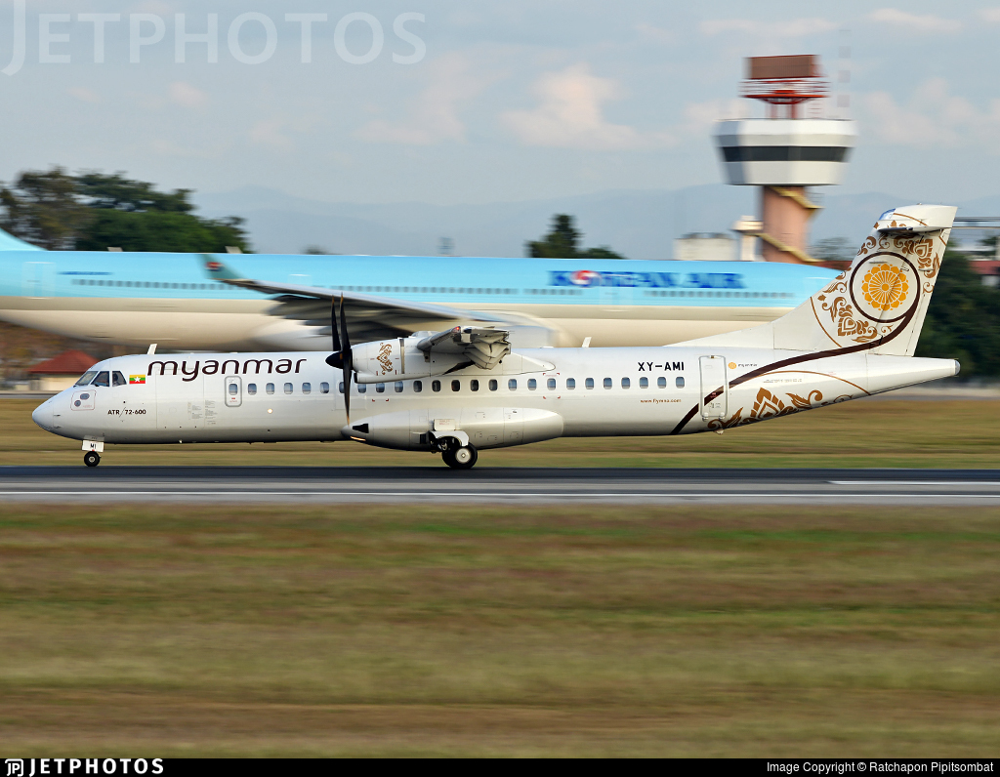

Myanmar National Airlines Fleet Size
2 B737 (XY-ALB) (XY-ALV)

8 ATR72-600 (XY-AME, XY-AML, XY-AMJ, XY-AMK, XY-AMI, XY-AMY, XY-AMZ, XY-AMM)

The Airline Info
Myanmar National Airlines found in 1948 and owned by the Myanmar government, operates a fleet of about 11 aircraft, including ATR 72-600s with around 70 seats and Boeing 737-800s with about 156–164 seats, plus a freighter with an average fleet age of 10–13 years, it serves as the country’s flag carrier and continues to link Myanmar’s cities with regional destinations.
The Age Of All the planes
| Regestration | Aircraft Type | Seat number | Aircraft Age | Image |
|---|---|---|---|---|
| XY-AJY | ATR 72-600 | 72 | 10.1 years | |
| XY-AJZ | ATR 72-600 | 72 | 9.7 years | |
| XY-AME | ATR 72-600 | 72 | 9.2 years | |
| XY-AMI | ATR 72-600 | 72 | 8.9 years |  |
| XY-AMJ | ATR 72-600 | 72 | 8.8 years | |
| XY-AMK | ATR 72-600 | 72 | 8.5 years | |
| XY-AML | ATR 72-600 | 72 | 6.7 years | |
| XY-AMM | ATR 72-600 | 72 | 6.7 years | |
| XY-ALB | B737-800 | 160 | 10.3 years | |
| XY-ALV | B737-MAX8 | 160 | 16.7 years |
Airline History
Myanmar National Airlines (MNA), founded in 1948 as Union of Burma Airways, is Myanmar’s state-owned flag carrier. After name changes in 1972 and 1989, it was rebranded in 2014, modernizing with ATR 72s and Boeing 737s. Today it operates a wide domestic network and growing regional international routes.